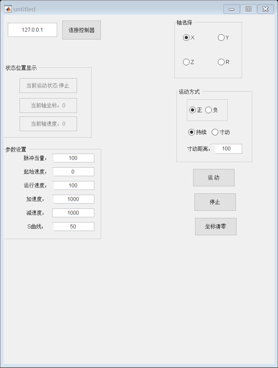

function varargout = untitled(varargin) % UNTITLED MATLAB code for untitled.fig % UNTITLED, by itself, creates a new UNTITLED or raises the existing % singleton*. % % H = UNTITLED returns the handle to a new UNTITLED or the handle to % the existing singleton*. % % UNTITLED('CALLBACK',hObject,eventData,handles,...) calls the local % function named CALLBACK in UNTITLED.M with the given input arguments. % % UNTITLED('Property','Value',...) creates a new UNTITLED or raises the % existing singleton*. Starting from the left, property value pairs are % applied to the GUI before untitled_OpeningFcn gets called. An % unrecognized property name or invalid value makes property application % stop. All inputs are passed to untitled_OpeningFcn via varargin. % % *See GUI Options on GUIDE's Tools menu. Choose "GUI allows only one % instance to run (singleton)". % % See also: GUIDE, GUIDATA, GUIHANDLES % Edit the above text to modify the response to help untitled % Last Modified by GUIDE v2.5 08-Jun-2021 15:06:00 % Begin initialization code - DO NOT EDIT gui_Singleton = 1; gui_State = struct('gui_Name', mfilename, ... 'gui_Singleton', gui_Singleton, ... 'gui_OpeningFcn', @untitled_OpeningFcn, ... 'gui_OutputFcn', @untitled_OutputFcn, ... 'gui_LayoutFcn', [] , ... 'gui_Callback', []); if nargin && ischar(varargin{1}) gui_State.gui_Callback = str2func(varargin{1}); end if nargout [varargout{1:nargout}] = gui_mainfcn(gui_State, varargin{:}); else gui_mainfcn(gui_State, varargin{:}); end % End initialization code - DO NOT EDIT % --- Executes just before untitled is made visible. function untitled_OpeningFcn(hObject, eventdata, handles, varargin) % This function has no output args, see OutputFcn. % hObject handle to figure % eventdata reserved - to be defined in a future version of MATLAB % handles structure with handles and user data (see GUIDATA) % varargin command line arguments to untitled (see VARARGIN) % Choose default command line output for untitled handles.output = hObject; % Update handles structure guidata(hObject, handles); if not(libisloaded('zauxdll'))%加载正运动函数库 loadlibrary('zauxdll.dll','zauxdll2.h'); end disp("加载函数库");%命令行打印 global g_handleptr;%定义连接句柄 global g_nAxis;%定义轴号 global g_Dir;%定义运动方向 global g_Moveway;%定义运动方式 g_handleptr= libpointer('voidPtrPtr'); g_Dir=1; g_Moveway=0; g_nAxis=0; % UIWAIT makes untitled wait for user response (see UIRESUME) % uiwait(handles.figure1); % --- Outputs from this function are returned to the command line. function varargout = untitled_OutputFcn(hObject, eventdata, handles) % varargout cell array for returning output args (see VARARGOUT); % hObject handle to figure % eventdata reserved - to be defined in a future version of MATLAB % handles structure with handles and user data (see GUIDATA) % Get default command line output from handles structure varargout{1} = handles.output; % --- Executes on button press in pushbutton_openZmc. function pushbutton_openZmc_Callback(hObject, eventdata, handles) % hObject handle to pushbutton_openZmc (see GCBO) % eventdata reserved - to be defined in a future version of MATLAB % handles structure with handles and user data (see GUIDATA) handles.timer = timer('Period',0.05,'ExecutionMode','FixedRate',... 'TimerFcn',{@UpdateSliderData, handles});%定时器 global g_handleptr;%定义连接句柄 ip =get(handles.edit_Ip,'String'); disp("连接控制器:"+ip); zmc_ip = char(ip); [res,~] = calllib('zauxdll','ZAux_OpenEth',zmc_ip ,g_handleptr); commandCheckHandler("ZAux_OpenEth",res); if res==0 fprintf('连接控制器成功\n'); set(gcf,'NumberTitle', 'off', 'Name', '连接成功'); %msgbox('Connection successful'); start( handles.timer );%启动定时器 else fprintf('连接控制器失败,错误码%d\n',res); set(gcf,'NumberTitle', 'off', 'Name', '连接失败'); msgbox('Connection failure，Please check the IP！');%连接控制器失败，请检查IP地址 return; end %//该指令检查指令的返回值，如果返回值不为 0，则向屏幕打印返回值 function commandCheckHandler(command,ret) if (ret) fprintf("%s return code is %d\n", command, ret); end function edit_Ip_Callback(hObject, eventdata, handles) % hObject handle to edit_Ip (see GCBO) % eventdata reserved - to be defined in a future version of MATLAB % handles structure with handles and user data (see GUIDATA) % Hints: get(hObject,'String') returns contents of edit_Ip as text % str2double(get(hObject,'String')) returns contents of edit_Ip as a double % --- Executes during object creation, after setting all properties. function edit_Ip_CreateFcn(hObject, eventdata, handles) % hObject handle to edit_Ip (see GCBO) % eventdata reserved - to be defined in a future version of MATLAB % handles empty - handles not created until after all CreateFcns called % Hint: edit controls usually have a white background on Windows. % See ISPC and COMPUTER. if ispc && isequal(get(hObject,'BackgroundColor'), get(0,'defaultUicontrolBackgroundColor')) set(hObject,'BackgroundColor','white'); end function UpdateSliderData(obj, events, handles) global g_handleptr;%定义连接句柄 global g_nAxis;%定义轴号 [res,~,runstate]=calllib('zauxdll','ZAux_Direct_GetIfIdle',g_handleptr,g_nAxis, 0); commandCheckHandler("ZAux_Direct_GetIfIdle",res); [res,~,curpos]=calllib('zauxdll','ZAux_Direct_GetDpos',g_handleptr, g_nAxis, 0); commandCheckHandler("ZAux_Direct_GetDpos",res); [res,~,curspeed]=calllib('zauxdll','ZAux_Direct_GetVpSpeed',g_handleptr, g_nAxis, 0); commandCheckHandler("ZAux_Direct_GetVpSpeed",res); str_curpos=num2str(curpos); str_curspeed=num2str(curspeed); if (runstate==0) set(handles.edit_runstate,'String',"当前运动状态:运行"); else set(handles.edit_runstate,'String',"当前运动状态:停止"); end set(handles.edit_curpos,'String',"当前轴坐标：" +str_curpos); set(handles.edit_curspeed,'String',"当前轴速度：" +str_curspeed); function edit_runstate_Callback(hObject, eventdata, handles) % hObject handle to edit_runstate (see GCBO) % eventdata reserved - to be defined in a future version of MATLAB % handles structure with handles and user data (see GUIDATA) % Hints: get(hObject,'String') returns contents of edit_runstate as text % str2double(get(hObject,'String')) returns contents of edit_runstate as a double % --- Executes during object creation, after setting all properties. function edit_runstate_CreateFcn(hObject, eventdata, handles) % hObject handle to edit_runstate (see GCBO) % eventdata reserved - to be defined in a future version of MATLAB % handles empty - handles not created until after all CreateFcns called % Hint: edit controls usually have a white background on Windows. % See ISPC and COMPUTER. if ispc && isequal(get(hObject,'BackgroundColor'), get(0,'defaultUicontrolBackgroundColor')) set(hObject,'BackgroundColor','white'); end function edit_curpos_Callback(hObject, eventdata, handles) % hObject handle to edit_curpos (see GCBO) % eventdata reserved - to be defined in a future version of MATLAB % handles structure with handles and user data (see GUIDATA) % Hints: get(hObject,'String') returns contents of edit_curpos as text % str2double(get(hObject,'String')) returns contents of edit_curpos as a double % --- Executes during object creation, after setting all properties. function edit_curpos_CreateFcn(hObject, eventdata, handles) % hObject handle to edit_curpos (see GCBO) % eventdata reserved - to be defined in a future version of MATLAB % handles empty - handles not created until after all CreateFcns called % Hint: edit controls usually have a white background on Windows. % See ISPC and COMPUTER. if ispc && isequal(get(hObject,'BackgroundColor'), get(0,'defaultUicontrolBackgroundColor')) set(hObject,'BackgroundColor','white'); end function edit_curspeed_Callback(hObject, eventdata, handles) % hObject handle to edit_curspeed (see GCBO) % eventdata reserved - to be defined in a future version of MATLAB % handles structure with handles and user data (see GUIDATA) % Hints: get(hObject,'String') returns contents of edit_curspeed as text % str2double(get(hObject,'String')) returns contents of edit_curspeed as a double % --- Executes during object creation, after setting all properties. function edit_curspeed_CreateFcn(hObject, eventdata, handles) % hObject handle to edit_curspeed (see GCBO) % eventdata reserved - to be defined in a future version of MATLAB % handles empty - handles not created until after all CreateFcns called % Hint: edit controls usually have a white background on Windows. % See ISPC and COMPUTER. if ispc && isequal(get(hObject,'BackgroundColor'), get(0,'defaultUicontrolBackgroundColor')) set(hObject,'BackgroundColor','white'); end % --- Executes on button press in pushbutton_runmove.运动 function pushbutton_runmove_Callback(hObject, eventdata, handles) % hObject handle to pushbutton_runmove (see GCBO) % eventdata reserved - to be defined in a future version of MATLAB % handles structure with handles and user data (see GUIDATA) global g_handleptr;%定义连接句柄 global g_nAxis;%定义轴号 global g_Dir;%定义运动方向 global g_Moveway;%定义运动方式 calllib('zauxdll','ZAux_Direct_SetAtype',g_handleptr, g_nAxis,0); calllib('zauxdll','ZAux_Direct_SetUnits',g_handleptr,g_nAxis,str2num(get(handles.edit_units,'String'))); calllib('zauxdll','ZAux_Direct_SetLspeed',g_handleptr, g_nAxis, str2num(get(handles.edit_lspeed,'String'))); calllib('zauxdll','ZAux_Direct_SetSpeed',g_handleptr, g_nAxis, str2num(get(handles.edit_speed,'String'))); calllib('zauxdll','ZAux_Direct_SetAccel',g_handleptr, g_nAxis, str2num(get(handles.edit_acc,'String'))); calllib('zauxdll','ZAux_Direct_SetDecel',g_handleptr, g_nAxis, str2num(get(handles.edit_dec,'String'))); calllib('zauxdll','ZAux_Direct_SetSramp',g_handleptr, g_nAxis, str2num(get(handles.edit_sramp,'String'))); if (g_Moveway) %//连续运动 calllib('zauxdll','ZAux_Direct_Single_Vmove',g_handleptr, g_nAxis,g_Dir); else % //寸动 calllib('zauxdll','ZAux_Direct_Single_Move',g_handleptr, g_nAxis, g_Dir * str2num(get(handles.edit_step,'String'))); end function radiobutton1_Callback(hObject, eventdata, handles) % hObject handle to radiobutton1 (see GCBO) % eventdata reserved - to be defined in a future version of MATLAB % handles structure with handles and user data (see GUIDATA) global g_nAxis; g_nAxis=0; % Hint: get(hObject,'Value') returns toggle state of radiobutton1 % --- Executes on button press in radiobuttonY. function radiobuttonY_Callback(hObject, eventdata, handles) % hObject handle to radiobuttonY (see GCBO) % eventdata reserved - to be defined in a future version of MATLAB % handles structure with handles and user data (see GUIDATA) global g_nAxis; g_nAxis=1; % Hint: get(hObject,'Value') returns toggle state of radiobuttonY % --- Executes on button press in radiobuttonZ. function radiobuttonZ_Callback(hObject, eventdata, handles) % hObject handle to radiobuttonZ (see GCBO) % eventdata reserved - to be defined in a future version of MATLAB % handles structure with handles and user data (see GUIDATA) global g_nAxis; g_nAxis=2; % Hint: get(hObject,'Value') returns toggle state of radiobuttonZ % --- Executes on button press in radiobuttonR. function radiobuttonR_Callback(hObject, eventdata, handles) % hObject handle to radiobuttonR (see GCBO) % eventdata reserved - to be defined in a future version of MATLAB % handles structure with handles and user data (see GUIDATA) global g_nAxis; g_nAxis=3; % Hint: get(hObject,'Value') returns toggle state of radiobuttonR % --- Executes during object deletion, before destroying properties.关闭连接 function figure1_DeleteFcn(hObject, eventdata, handles) global g_handleptr;%定义连接句柄 calllib('zauxdll','ZAux_Close',g_handleptr); disp("关闭与控制器连接");%打印 % --- Executes on button press in pushbutton_stopMove.单轴停止 function pushbutton_stopMove_Callback(hObject, eventdata, handles) global g_handleptr;%定义连接句柄 global g_nAxis; calllib('zauxdll','ZAux_Direct_Single_Cancel',g_handleptr,g_nAxis,2); % --- Executes on button press in pushbutton_setDpos.坐标清零 function pushbutton_setDpos_Callback(hObject, eventdata, handles) global g_handleptr;%定义连接句柄 for i = 0:+1:3 calllib('zauxdll','ZAux_Direct_SetDpos',g_handleptr,i,0); end % --- Executes on button press in radiobutton5. function radiobutton5_Callback(hObject, eventdata, handles) % hObject handle to radiobutton5 (see GCBO) % eventdata reserved - to be defined in a future version of MATLAB % handles structure with handles and user data (see GUIDATA) global g_Dir;%定义运动方向 g_Dir=1; % Hint: get(hObject,'Value') returns toggle state of radiobutton5 % --- Executes on button press in radiobutton6. function radiobutton6_Callback(hObject, eventdata, handles) % hObject handle to radiobutton6 (see GCBO) % eventdata reserved - to be defined in a future version of MATLAB % handles structure with handles and user data (see GUIDATA) global g_Dir;%定义运动方向 g_Dir=-1; % Hint: get(hObject,'Value') returns toggle state of radiobutton6 % --- Executes on button press in radiobutton8. function radiobutton8_Callback(hObject, eventdata, handles) % hObject handle to radiobutton8 (see GCBO) % eventdata reserved - to be defined in a future version of MATLAB % handles structure with handles and user data (see GUIDATA) global g_Moveway;%定义运动方式 g_Moveway=0; % Hint: get(hObject,'Value') returns toggle state of radiobutton8 % --- Executes on button press in radiobutton7. function radiobutton7_Callback(hObject, eventdata, handles) % hObject handle to radiobutton7 (see GCBO) % eventdata reserved - to be defined in a future version of MATLAB % handles structure with handles and user data (see GUIDATA) global g_Moveway;%定义运动方式 g_Moveway=1; % Hint: get(hObject,'Value') returns toggle state of radiobutton7 function edit_units_Callback(hObject, eventdata, handles) % hObject handle to edit_units (see GCBO) % eventdata reserved - to be defined in a future version of MATLAB % handles structure with handles and user data (see GUIDATA) % Hints: get(hObject,'String') returns contents of edit_units as text % str2double(get(hObject,'String')) returns contents of edit_units as a double % --- Executes during object creation, after setting all properties. function edit_units_CreateFcn(hObject, eventdata, handles) % hObject handle to edit_units (see GCBO) % eventdata reserved - to be defined in a future version of MATLAB % handles empty - handles not created until after all CreateFcns called % Hint: edit controls usually have a white background on Windows. % See ISPC and COMPUTER. if ispc && isequal(get(hObject,'BackgroundColor'), get(0,'defaultUicontrolBackgroundColor')) set(hObject,'BackgroundColor','white'); end function edit_lspeed_Callback(hObject, eventdata, handles) % hObject handle to edit_lspeed (see GCBO) % eventdata reserved - to be defined in a future version of MATLAB % handles structure with handles and user data (see GUIDATA) % Hints: get(hObject,'String') returns contents of edit_lspeed as text % str2double(get(hObject,'String')) returns contents of edit_lspeed as a double % --- Executes during object creation, after setting all properties. function edit_lspeed_CreateFcn(hObject, eventdata, handles) % hObject handle to edit_lspeed (see GCBO) % eventdata reserved - to be defined in a future version of MATLAB % handles empty - handles not created until after all CreateFcns called % Hint: edit controls usually have a white background on Windows. % See ISPC and COMPUTER. if ispc && isequal(get(hObject,'BackgroundColor'), get(0,'defaultUicontrolBackgroundColor')) set(hObject,'BackgroundColor','white'); end function edit_speed_Callback(hObject, eventdata, handles) % hObject handle to edit_speed (see GCBO) % eventdata reserved - to be defined in a future version of MATLAB % handles structure with handles and user data (see GUIDATA) % Hints: get(hObject,'String') returns contents of edit_speed as text % str2double(get(hObject,'String')) returns contents of edit_speed as a double % --- Executes during object creation, after setting all properties. function edit_speed_CreateFcn(hObject, eventdata, handles) % hObject handle to edit_speed (see GCBO) % eventdata reserved - to be defined in a future version of MATLAB % handles empty - handles not created until after all CreateFcns called % Hint: edit controls usually have a white background on Windows. % See ISPC and COMPUTER. if ispc && isequal(get(hObject,'BackgroundColor'), get(0,'defaultUicontrolBackgroundColor')) set(hObject,'BackgroundColor','white'); end function edit_acc_Callback(hObject, eventdata, handles) % hObject handle to edit_acc (see GCBO) % eventdata reserved - to be defined in a future version of MATLAB % handles structure with handles and user data (see GUIDATA) % Hints: get(hObject,'String') returns contents of edit_acc as text % str2double(get(hObject,'String')) returns contents of edit_acc as a double % --- Executes during object creation, after setting all properties. function edit_acc_CreateFcn(hObject, eventdata, handles) % hObject handle to edit_acc (see GCBO) % eventdata reserved - to be defined in a future version of MATLAB % handles empty - handles not created until after all CreateFcns called % Hint: edit controls usually have a white background on Windows. % See ISPC and COMPUTER. if ispc && isequal(get(hObject,'BackgroundColor'), get(0,'defaultUicontrolBackgroundColor')) set(hObject,'BackgroundColor','white'); end function edit_dec_Callback(hObject, eventdata, handles) % hObject handle to edit_dec (see GCBO) % eventdata reserved - to be defined in a future version of MATLAB % handles structure with handles and user data (see GUIDATA) % Hints: get(hObject,'String') returns contents of edit_dec as text % str2double(get(hObject,'String')) returns contents of edit_dec as a double % --- Executes during object creation, after setting all properties. function edit_dec_CreateFcn(hObject, eventdata, handles) % hObject handle to edit_dec (see GCBO) % eventdata reserved - to be defined in a future version of MATLAB % handles empty - handles not created until after all CreateFcns called % Hint: edit controls usually have a white background on Windows. % See ISPC and COMPUTER. if ispc && isequal(get(hObject,'BackgroundColor'), get(0,'defaultUicontrolBackgroundColor')) set(hObject,'BackgroundColor','white'); end function edit_sramp_Callback(hObject, eventdata, handles) % hObject handle to edit_sramp (see GCBO) % eventdata reserved - to be defined in a future version of MATLAB % handles structure with handles and user data (see GUIDATA) % Hints: get(hObject,'String') returns contents of edit_sramp as text % str2double(get(hObject,'String')) returns contents of edit_sramp as a double % --- Executes during object creation, after setting all properties. function edit_sramp_CreateFcn(hObject, eventdata, handles) % hObject handle to edit_sramp (see GCBO) % eventdata reserved - to be defined in a future version of MATLAB % handles empty - handles not created until after all CreateFcns called % Hint: edit controls usually have a white background on Windows. % See ISPC and COMPUTER. if ispc && isequal(get(hObject,'BackgroundColor'), get(0,'defaultUicontrolBackgroundColor')) set(hObject,'BackgroundColor','white'); end function edit_step_Callback(hObject, eventdata, handles) % hObject handle to edit_step (see GCBO) % eventdata reserved - to be defined in a future version of MATLAB % handles structure with handles and user data (see GUIDATA) % Hints: get(hObject,'String') returns contents of edit_step as text % str2double(get(hObject,'String')) returns contents of edit_step as a double % --- Executes during object creation, after setting all properties. function edit_step_CreateFcn(hObject, eventdata, handles) % hObject handle to edit_step (see GCBO) % eventdata reserved - to be defined in a future version of MATLAB % handles empty - handles not created until after all CreateFcns called % Hint: edit controls usually have a white background on Windows. % See ISPC and COMPUTER. if ispc && isequal(get(hObject,'BackgroundColor'), get(0,'defaultUicontrolBackgroundColor')) set(hObject,'BackgroundColor','white'); end % --- Executes during object creation, after setting all properties. function pushbutton_openZmc_CreateFcn(hObject, eventdata, handles) % hObject handle to pushbutton_openZmc (see GCBO) % eventdata reserved - to be defined in a future version of MATLAB % handles empty - handles not created until after all CreateFcns called
加载函数库
关闭与控制器连接
